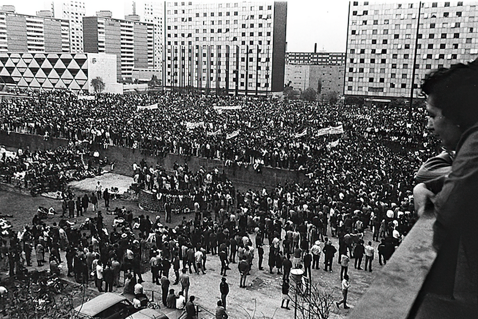

Disparos sobre la multitud en Tlatelolco: hay muertos y cientos de detenidos
Luces de bengala cayeron al atardecer sobre la Plaza de las Tres Culturas y comenzó el fuego del ejército y de hombres armados con guante blanco. El número de muertos no puede precisarse esta noche: el gobierno habla de cifras cortas y los testigos, de decenas. Hay familias que buscan por hospitales y cuarteles.

A las seis y diez de la tarde, dos luces de bengala cayeron desde un helicóptero sobre la Plaza de las Tres Culturas, donde varios miles de personas escuchaban a los oradores del Consejo Nacional de Huelga. Casi enseguida comenzaron los disparos. Tropas del ejército, que habían rodeado la plaza, avanzaron sobre la multitud; al mismo tiempo, testigos vieron tirar a hombres vestidos de civil que llevaban un guante o un pañuelo blanco en la mano izquierda. La gente corrió hacia las salidas y las encontró cerradas por los soldados. El fuego, con pausas, se prolongó durante horas. Llovía sobre la plaza cuando anocheció.
El mitin había sido convocado para informar sobre el pliego petitorio y transcurría en calma; los dirigentes habían cancelado la marcha que se proyectaba hacia el Casco de Santo Tomás, precisamente para evitar un choque. Los oradores hablaban desde un balcón del tercer piso del edificio Chihuahua. Hasta allí subieron, al iniciarse el fuego, los hombres del guante blanco, que sometieron a dirigentes y periodistas. En la plaza, vecinos de la unidad habitacional abrieron sus puertas a los que huían; los soldados registraron después los departamentos, piso por piso. Hay periodistas heridos, entre ellos una corresponsal extranjera. Las ambulancias tardaron en poder entrar.
Esta noche el gobierno informa que agitadores dispararon primero contra la tropa y que el ejército respondió al ataque; sus partes hablan de una veintena de muertos y de cerca de mil detenidos. Los testigos con los que este diario pudo hablar refieren otra cosa: decenas y decenas de cuerpos tendidos junto a la iglesia de Santiago, muchachos, mujeres, algún niño, cargados después en camiones militares. Ninguna de las dos cuentas puede verificarse a esta hora. Es forzoso escribirlo así: no se sabe cuántos muertos hay. La cifra exacta queda, como tantas cosas de esta noche, del lado de las autoridades que han cerrado la plaza.
Frente a los puestos de la Cruz Roja y de la Cruz Verde, y ante las puertas de los cuarteles, hay desde hace horas filas de padres y madres preguntando por sus hijos. Recorren las listas de heridos, pasan de una ventanilla a otra, vuelven a empezar. En Tlatelolco, vecinos cuentan que los zapatos perdidos cubrían el piso de la plaza y que el agua de la lluvia corría teñida. Los detenidos han sido llevados a distintos puntos, entre ellos el Campo Militar número uno; a muchos no se les ha podido localizar esta noche. Los teléfonos de la ciudad no hablan de otra cosa, y hablan en voz baja.
El movimiento que desembocó en esta noche empezó en julio por un pleito entre estudiantes y creció con cada intervención de la fuerza pública: un pliego de seis puntos, marchas que llenaron el Zócalo, una manifestación en silencio, la ocupación militar de la Universidad y del Politécnico. A diez días de que se enciendan los fuegos olímpicos, la ciudad que se preparaba para recibir al mundo recoge esta noche a sus muertos sin conocer su número. Esta plaza vio caer, hace siglos, una ciudad entera; sabe lo que es el silencio que sigue a las armas. Lo que México no podrá hacer con esta noche es olvidarla.